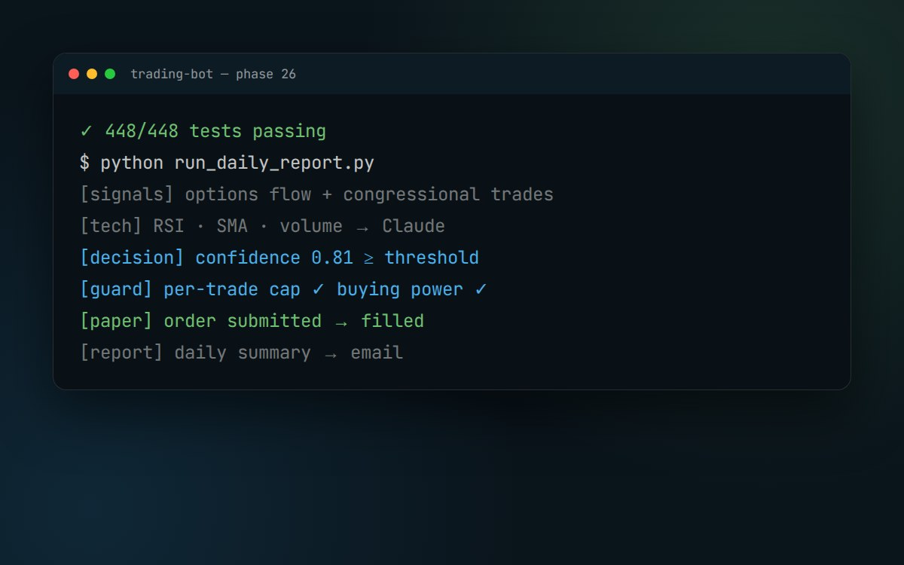

Trading Bot
A test-covered paper-trading system that turns market and disclosure signals into rule-bound trades.
- Role
- Solo: design, build
- Status
- Active development
- Platform
- Python · Alpaca · Robinhood
- Mode
- Paper trading

Representative run output. There's no UI; the system runs headless and reports by email.
The challenge
Manually tracking trading signals and acting on them is slow and emotional. I wanted a disciplined way to test strategies, with hard limits so no impulsive call or runaway script can do damage.
What I built
It started as a single Replit script and grew, over 26+ build phases, into a test-covered paper-trading system on Alpaca. It combines options-flow data with congressional trade disclosures, submits paper-only orders and emails a daily report.
A second layer connects the official Robinhood MCP connector to a separate, dedicated cash account. There, technical indicators go to Claude as structured data, and every trade has to clear hard guardrails.
Results
- 448 of 448 tests passing, with confirmed brokerage connectivity.
- Hard guardrails: a confidence threshold, a per-trade dollar cap, a buying-power check, and paper-only orders.
- Being hardened for always-on deployment.
Built with
- Python
- Alpaca API
- Robinhood MCP
- yfinance
- Claude API
- py-clob-client
- pytest
Features 14 total
Signals + decisions
- Options-flow feed combined with congressional trade disclosures (STOCK Act)
- RSI, SMA and volume from yfinance, sent as structured JSON to Claude for a scored decision
- Researched extra signals: congressional trackers (Capitol Trades, Quiver Quantitative), 13F institutional filings and Form 4 insider trades
- Confidence scoring for every trade idea
Risk controls
- Paper-only order submission while strategies are proven
- Confidence threshold: no trade below it
- Per-trade dollar cap and buying-power check before any order
- Separate, dedicated cash account for agent trading; the main account is read-only
Engineering + ops
- 26+ numbered build phases, each verified before the next
- 448-test suite; confirmed brokerage connectivity
- Daily report sent by email, with a dashboard pipeline in progress
- Hardening underway for always-on deployment
Adjacent experiments
- Polymarket copy-trading bot MVP (py-clob-client SDK, Polygon) built on Replit
- Evaluated correlated-market arbitrage, chosen over news arbitrage because of latency limits